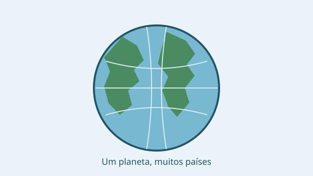
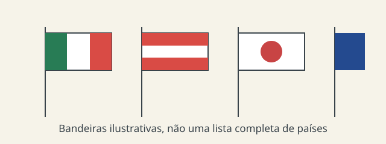

Bem-vindo à UNO
A Unorganized Nations Organization (Organização Desorganizada das Nações) é uma instituição inteiramente fictícia criada para este projeto escolar. A proposta é aproximar países para aprender sobre geografia, culturas e cooperação internacional, mesmo quando a reunião começa sem pauta.
Nossa missão (mais ou menos organizada)
A UNO incentiva a curiosidade sobre os países e o diálogo respeitoso entre povos. Nosso objetivo é transformar a confusão em perguntas, pesquisa e aprendizagem.
Como funciona uma reunião da UNO
- Escolher um tema para discussão.
- Consultar dados confiáveis sobre os países envolvidos.
- Ouvir diferentes pontos de vista com respeito.
- Registrar as conclusões — de preferência na ata correta.
O que você pode explorar
- Informações sobre países:
- Capitais e continentes;
- Idiomas e datas de admissão na ONU.
- Um glossário com termos importantes;
- Uma tabela comparativa;
- Formulários fictícios para participação e contato.

Uma organização de todos os cantos do mundo
Conhecer outros países ajuda a perceber semelhanças e diferenças. Nenhuma característica isolada resume toda a população de um país: cada sociedade é diversa e está em constante transformação.

Para participar da simulação, acesse o formulário de cadastro da UNO.